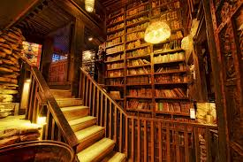

We offer one-hour, guided tours from 9am to 5pm everyday. These daytime tours focus on the unique history of the Bennet House and its surrounding property. From 6pm until 2am, we offer hour-long haunted tours that will take you on a mysterious journey through the house with a registered medium, in hopes of sighting one of our many resident ghosts.
